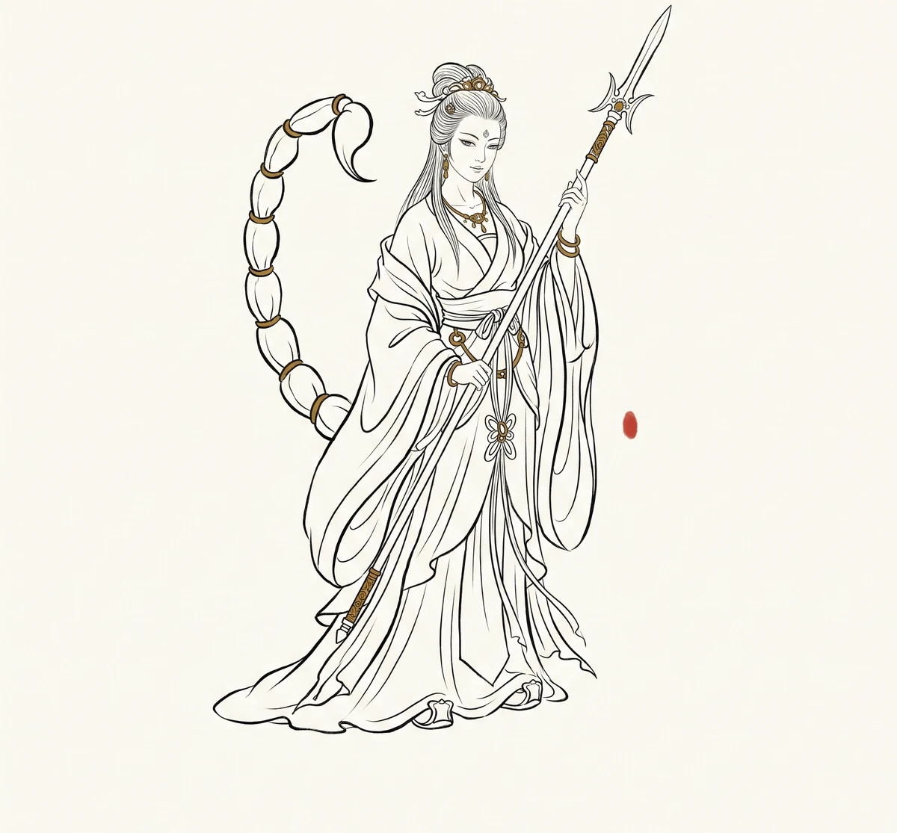

蝎子精

轨标：学术研究 引用：本文引用的论文 / 专著 / 版本见 学术论文索引。 原文引文（第55回）：“他前者在雷音寺听佛谈经，如来见了，不合用手推他一把，他就转过钩子，把如来左手中拇指上扎了一下，如来也疼难禁，即着金刚拿他，他却在这里。” 原文引文（第55回）：“扎人痛者，是尾上一个钩子，唤做倒马毒。” 原文引文（第55回）：“菩萨道：“你去东天门里光明宫告求昴日星官，方能降伏。” 版本：v2.0.49（W076·A3 Batch 3 女性人物专题扩容） 关联回目：第55回 色邪淫戏唐三藏 性正修持不坏身 核验状态：引文已核验
一、出处与身世
蝎子精是西游诸妖中唯一伤过如来的存在。第55回 line 4231 起，她在西梁女国毒敌山琵琶洞据地为王，趁唐僧被女王招赘之机，一阵旋风将唐僧摄走。
她的身世极不寻常——line 4286 观音自述："这妖精十分利害...他前者在雷音寺听佛谈经，如来见了，不合用手推他一把，他就转过钩子，把如来左手中拇指上扎了一下，如来也疼难禁"。这段话三层意义：其一，蝎子精曾到灵山听经，地位不低；其二，如来动手推她，她回手就扎，敢对佛祖动手；其三，如来也疼难禁，即着金刚拿他，他却在这里——连灵山都拿不住她。
她的武器是"三股叉"——生成的两只钳脚；她的杀招是"倒马毒"——尾上一个钩子。line 4286 观音说："我也是近他不得。"
二、性格弧线
蝎子精的弧线极短：抢唐僧 → 逼婚 → 战悟空八戒 → 被昴日星官叫死。但这条短弧里藏着三个反常：
- 不偷不抢不图长生：她不要唐僧肉，她要唐僧的人——这是西游诸女妖中少见的"色欲大于食欲"者
- 敢伤佛祖：她在雷音寺就敢扎如来，这在西游诸妖中绝无仅有
- 死于天敌而非神佛：观音"近他不得"，如来"疼难禁"，最终是昴日星官（公鸡）一叫将她叫死——民间相生相克，高于神佛法力
三、关键情节
一、雷音寺扎如来（line 4286）
观音讲述蝎子精在雷音寺听经，如来推她一把，她就扎了如来左手拇指。这段是西游对"佛祖不可侵犯"的最激进颠覆——如来不是被妖魔围攻，不是被算计陷害，而是被一只蝎子扎了一下手指，"疼难禁"。
二、毒敌山逼婚（第55回 line 4234 起）
蝎子精将唐僧摄至琵琶洞，自称"我做夫人，你做先生"。她不杀唐僧，不蒸不煮，她要"阴阳配合"。这与女儿国女王的招赘逻辑形成镜像——女王让出王位，蝎子精让出洞府。差别在于：女王有契约精神，蝎子精只有欲望。
三、昴日星官显形（line 4294 后）
观音指示悟空去东天门光明宫告求昴日星官。line 4294 悟空到光明宫，星官问"何难？在何地方？"——这位星官不知人间有何妖怪，但他一出面，蝎子精就死了。神佛近不得的妖，被一只公鸡叫死了。
四、象征意义
一、民间相克高于神佛法力
蝎子精的死亡逻辑极有意味：如来疼难禁，观音近不得，但公鸡一叫她就死。这是西游对"神佛法力"的祛魅——再厉害的妖，也敌不过民间相生相克的自然规律。
蝎子怕鸡，这是民间常识。吴承恩（或世德堂本作者）用这个常识压倒了灵山的法力。这是西游的平民逻辑——神佛系统的法力，敌不过一只公鸡的啼鸣。
二、色欲与权力
蝎子精与女儿国女王形成 A3 Batch 3 第一组镜像： - 女王：主权者，以国富招赘，尊重契约，主动放手 - 蝎子精：占有者，以武力抢夺，无视契约，死于天敌
两者都是"主动求婚者"，但主权者有退让余地，占有者没有。蝎子精的悲剧在于：她既无主权者的合法性（国家），又无神佛的庇护（坐骑/童子），她只有欲望——而欲望在西游宇宙里，是要被天敌叫死的。
五、历史原型与演变
一、明代"色邪"观念
第55回回目"色邪淫戏唐三藏 性正修持不坏身"——"色邪"是关键词。明代礼教将"色"分为"正色"（婚内）与"邪色"（婚外）。蝎子精是"邪色"的极致：她不在婚约内，她强行夺取。
这与《金瓶梅》（1617 刊行）的潘金莲形成对照——潘金莲是"婚外情"的主动者，但她的"主动"被明代礼教判为"淫妇"；蝎子精的"主动"被西游判为"妖怪"。两者都是"女性主动"的惩戒叙事。
二、《牡丹亭》的对照
1598 年汤显祖《牡丹汤》杜丽娘"情不知所起"——这是"正情"的觉醒。蝎子精的"色邪"是"邪情"的极端。明代文学对女性欲望的两极化处理：要么是"梦中觉醒的纯情"（杜丽娘），要么是"现实中强夺的邪情"（蝎子精）。中间地带——女性正常欲望——在明代文学里几乎不存在。
三、相生相克的民间智慧
"蝎子怕鸡"是民间相生相克的常识。明代李时珍《本草纲目》1578 年刊行，载"蝎，足厥阴经药也"。民间用鸡驱蝎的实践早于明代。西游将民间常识置于神佛法力之上，这是对"正统知识体系"的祛魅——民间智慧高于灵山。
六、延伸思考
一、为什么如来推她？
line 4286 如来"不合用手推他一把"——"不合"二字极妙。如来为什么推她？是因为她听经时太近？是因为她身为妖却敢入灵山？这段叙述留白极多。可能的解读：如来动了凡心，想推开这个"不合适"的存在，结果被反扎。这比"如来故意考验"更激进——佛祖也有不合时宜的瞬间。
二、女性欲望的惩戒叙事
女王与蝎子精的对照，揭示了明代文学对女性欲望的双轨处理： - 有主权者（女王）：可以求婚，可以放手，体面收场 - 无主权者（蝎子精）：只能强夺，只能死，死于天敌
这是"权力决定女性欲望合法性"的隐喻。明代女性的命运，很大程度上取决于她背后的"主权"——有家族庇护的女子可以谈"情"，无家族庇护的女子只能被定义为"邪"。
三、民间逻辑的现代意义
"蝎子怕鸡"的现代回响：再强大的体系，也有它的天敌。神佛法力敌不过一只公鸡，这是对"绝对权力"的祛魅。当代社会的"绝对权力"——资本、算法、平台——也都有它们的天敌，只是尚未显形。
创作说明
Preflight 三轨验证（W075 教训吸收）： - line 号归属验证：line 4231（num: 55）、line 4234（text 起始）、line 4286（观音自述蝎子精扎如来）、line 4294（昴日星官光明宫）✅ Grep num:55 命中 line 4231 - 内容匹配验证：Read text-search.html line 4286，确认内容为"这妖精十分利害...本身是个蝎子精...如来左手中拇指上扎了一下，如来也疼难禁...我也是近他不得"✅ - chapter 归属验证：line 4231 num: 55 = 第55回（"色邪淫戏唐三藏 性正修持不坏身"）✅ Grep num: (55) 命中 line 4231
A3 Batch 3 女性人物专题扩容：第 2 篇·色邪女妖型 明代历史原型对照方向：明代"色邪"观念/《金瓶梅》1617/《牡丹亭》1598/民间相生相克